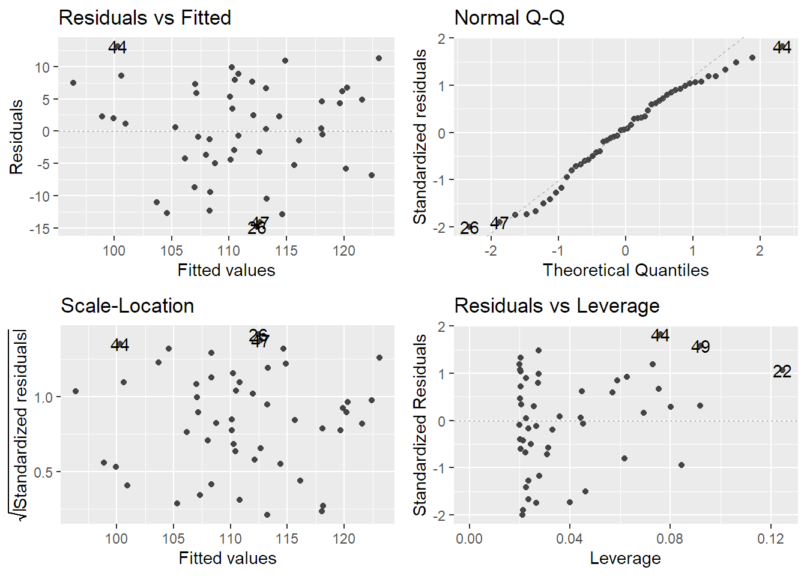
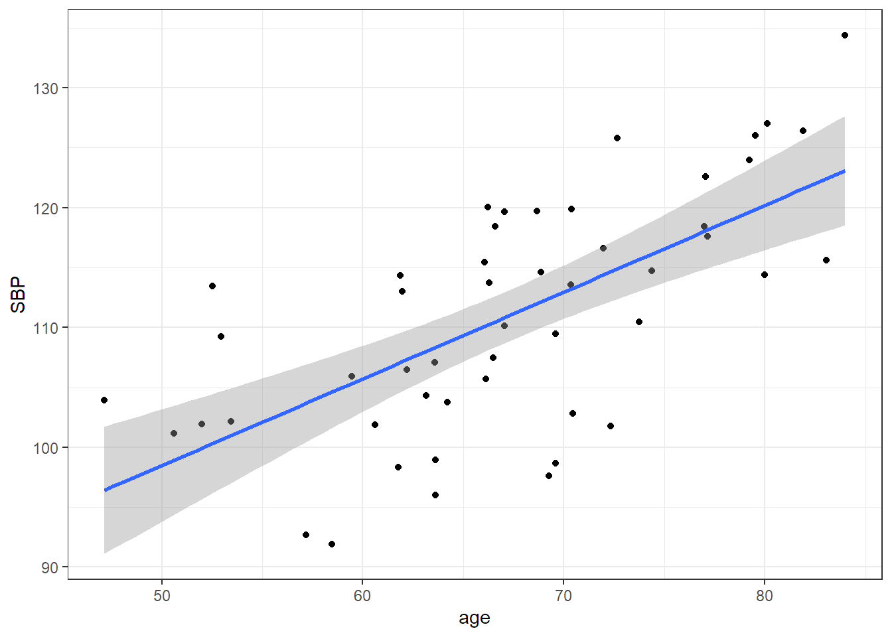

線形回帰モデルの流れ
目次
一般事項
ある変数と別の変数の関係を数式で表したものを回帰モデルと呼ぶ。
両者の関係が線形で与えられると仮定したものが線形回帰モデルである。
式で表すと、
\(y = \beta_0 + \beta_1x\)
である。
実際のデータでこのモデルを考える際には、観測値と仮定したモデルとの間には誤差が生じるため
\(y_i = \beta_0 + \beta_1x_i + \epsilon_i\)
となる。\(i = 1,2,3...n\)である。
このモデルがデータに良くあてはまるためには誤差\(\epsilon_i\)の総和が小さくなるようなパラメータを求めればよい。
ただし、線形回帰モデルと観測値の差は負の値になることもあるため、そのまま総和をとるわけでなく、2乗して
総和をとる。これが最小二乗法である。
架空データの作成
ここでは収縮期血圧と年齢の関係をみる単純なモデルを考える。
# 乱数発生で毎回同じ値になるようにseedを設定する
set.seed(123)
# ある程度線形モデルにフィットするようにするため相関を指定
rho <- 0.65
# 正規分布に従う乱数の設定(サンプルサイズ、平均、標準偏差は自由に設定可能)
y <- rnorm(n = 50, mean = 140, sd = 10)
x <- rnorm(n = 50, mean = 65, sd = 10)
z <- rnorm(n = 50, mean = 0, sd = 10)
# 相関をもった現実味のある値にするため、それぞれbpとageに格納
# sqrtは平方根という意味
bp <- sqrt(rho)*z + sqrt(1 - rho)*y + 30
age <- sqrt(rho)*z + sqrt(1 - rho)*x + 30
# データフレームという形式でbpとageをdataというオブジェクトに格納
data <- data.frame(age,bp)
# 列に名前を付ける
name <- c("age","SBP")
colnames(data) <- name
# これで収縮期血圧と年齢の関係を示すデータが完成データの確認を行う
次は実際にどんなデータであるか確認を行う。
# 外れ値や欠損値など
# summaryはデータの平均などを示す関数、headは先頭から指定の行を表示
summary(data)## age SBP
## Min. :47.15 Min. : 91.89
## 1st Qu.:62.03 1st Qu.:103.05
## Median :66.83 Median :111.74
## Mean :67.27 Mean :110.98
## 3rd Qu.:72.59 3rd Qu.:118.22
## Max. :83.99 Max. :134.37head(data, n = 3)| age | SBP |
|---|---|
| 64.22569 | 103.7818 |
| 70.35670 | 113.5344 |
| 66.21200 | 120.0577 |
# strは各変数の形式を示す、実際の解析ではどの形式なのか数値型なのか因子型なのかといった形の確認が重要
str(data)## 'data.frame': 50 obs. of 2 variables:
## $ age: num 64.2 70.4 66.2 73.7 59.4 ...
## $ SBP: num 104 114 120 110 106 ...図示
データの分布を散布図を描いて確認を行う。
plot関数でも描くことができるが今回はggplot2を用いる。
library(ggplot2)
ggplot(data = data,
aes(x = age, y = SBP)) +
geom_point() +
theme_bw()
散布図をみる限り、年齢と収縮期血圧には線形の関係がありそうにみえる。
モデルを作成する
ここでは２変量の単純なモデルを作成する。
lm関数は線形回帰モデルを作成する。
model <- lm(data = data, bp ~ age)
summary(model)##
## Call:
## lm(formula = bp ~ age, data = data)
##
## Residuals:
## Min 1Q Median 3Q Max
## -14.833 -4.858 0.504 6.091 13.138
##
## Coefficients:
## Estimate Std. Error t value Pr(>|t|)
## (Intercept) 62.2829 8.1559 7.637 7.83e-10 ***
## age 0.7239 0.1202 6.022 2.32e-07 ***
## ---
## Signif. codes: 0 '***' 0.001 '**' 0.01 '*' 0.05 '.' 0.1 ' ' 1
##
## Residual standard error: 7.478 on 48 degrees of freedom
## Multiple R-squared: 0.4304, Adjusted R-squared: 0.4185
## F-statistic: 36.26 on 1 and 48 DF, p-value: 2.322e-07Residualsは残差のことで誤差の予測値とみなすことができる。
Coefficientsは係数の結果である。切片と係数に該当する。
今回のモデルは、
\(y_i = 62.283 + 0.724x_i\)と表すことができる。
モデルの評価
library(ggfortify)
autoplot(model, smooth.colour = NA)## Warning: `arrange_()` is deprecated as of dplyr 0.7.0.
## Please use `arrange()` instead.
## See vignette('programming') for more help
## This warning is displayed once every 8 hours.
## Call `lifecycle::last_warnings()` to see where this warning was generated.## Warning: Removed 50 row(s) containing missing values (geom_path).
## Warning: Removed 50 row(s) containing missing values (geom_path).
## Warning: Removed 50 row(s) containing missing values (geom_path).
右上のQQplotはおおむね問題なさそうであり、残差は正規分布していそうである。
また左下の図をみても分散に明らかな偏りはなさそうであり、等分散性が保たれていると思われる。 (ばらつきは比較的ありそうである)
また先のsummaryの結果をみるとR-squaredという項目があるが、これが決定係数である。
予測値を\(\hat{y_i}\)、平均値を\(\bar{y}\)と表すと、
\[R^2 =1 - \frac{\sum_{i=1}^n(y_i - \hat{y_i})^2}{\sum_{i=1}^n(y_i - \bar{y})^2}\]
となる。決定係数は1に近いほど当てはまりがよいのであるから、この分数の部分が0に近ければよい。
分子が小さくなる、つまり予測値と観測値が近いほど0に近づく、決定係数が1に近づくということになる。
最後に散布図に線形回帰直線をひいてみる
ggplot(data = data,
aes(x = age, y = SBP)) +
geom_point() +
stat_smooth(method = "lm", se = TRUE, size = 1) +
theme_bw()## `geom_smooth()` using formula 'y ~ x'
結果
今回の年齢と収縮期血圧の関係では、年齢が高くなるほど線形に収縮期血圧が高くなると予想し、モデルを作成した。
モデルの前提は満たされているようであり、係数も有意な結果であった。
しかし決定係数は修正\(R^2\)および\(R^2\)ともに良いとは言えず、収縮期血圧について年齢だけのモデルでは、 十分に説明できていないことになる。
実際の臨床でも血圧を予測するうえで他に、家族歴など様々な要因が重要であることは当然であり、年齢だけで 十分に説明できないということは妥当であるといえる。